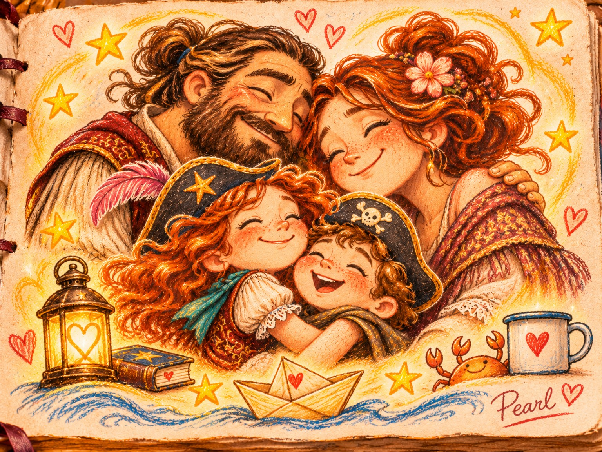

PEARL LOCKENSTURM · 14. NOVEMBER 2026
Pearls Lichterfenster – Kleine Dinge, die weiterleuchten

Im Papierboot wartet ein Gedanke. Tippe darauf oder wähle es mit der Tastatur.
„Mein Zuhause ist nicht nur das Haus. Mein Zuhause seid auch ihr.“